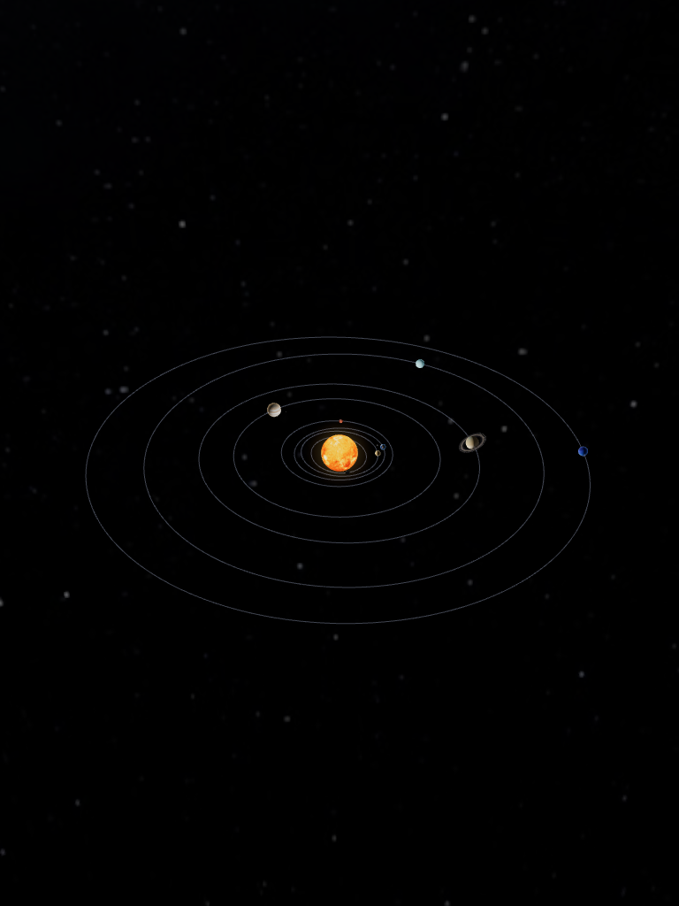

SłońceMerkuryWenusZiemiaMarsSaturnUranNeptunJowisz
Orbitka
Skala uproszczona
Trening pilota
0/3- Obróć widokprzeciągnij palcem
- Przybliżrozsuń dwa palce
- Wybierz planetędotknij jej na niebie
7 października 20261 dzień/s
1 dzień10 dni1 mies.1 rok